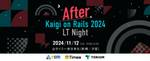
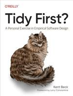

ESM アジャイル事業部 開発者ブログ
https://blog.agile.esm.co.jp/
永和システムマネジメント アジャイル事業部の開発者ブログです。
フィード

3 社共催で Kaigi on Rails 2024 の After Event を開催します
ESM アジャイル事業部 開発者ブログ
こんにちは、ふーが（@fugakkbn）です。 Kaigi on Rails 2024 がいよいよ来週に迫ってきました。僕は個人的にオーガナイザーとしても関わっているのですが、今年は昨年よりもさらにパワーアップしたカンファレンスになりそうです。 今年も例年通りおもしろそうなセッションばかりで、どちらのトラックを見るか迷ってしまいますね…！弊社からは @swamp09 が登壇するので、そちらの応援にも熱がはいります。 昨年に続き 2 度目のオンサイトとなる Kaigi on Rails 2024。Rubyist の皆さんと会場でお会いできるのを楽しみにしています。 After Event を開催…
2日前

ESM アジャイル事業部が購入している書籍たち (2024 秋) 1
1
ESM アジャイル事業部 開発者ブログ
今年も『ESM アジャイル事業部が購入している書籍たち (2024 秋) 』としてお送りします。 永和システムマネジメント アジャイル事業部で運用している書籍購入支援制度を使って、ここ1年間での購入がされている書籍をこの記事でリストアップします。 弊社事業部メンバーたちがどのような書籍を購入しているか、読書の秋の参考にどうぞ。 Ruby C言語 Java Web データベース インフラ ソフトウェア設計 / アーキテクチャ テスト 処理系 / 低レイヤー 構文解析 その他 「ESM Bookshelf of the Year 2024」🥇 ★は複数人が購入。★★はその中でも購入が多かったタイト…
7日前
角谷トーク・フィヨブーフェス2024にスポンサーします 1
ESM アジャイル事業部 開発者ブログ
2024年10月24日 (木) に東京の渋谷で開催される『角谷トーク・フィヨブーフェス2024』にスポンサーします。 fjordbootcamp.connpass.com 角谷さんには弊社フェローとしてもお世話になっており、最近の社内活動では『Tidy First?』読書会に関わっていただいています。 Tidy First?: A Personal Exercise in Empirical Software Design (English Edition)作者:Beck, KentO'Reilly MediaAmazon スポンサーとしての弊社からは、フィヨルドブートキャンプ卒業生でもある …
8日前
永和システムマネジメントで育児休暇を取得してみた
ESM アジャイル事業部 開発者ブログ
はじめに 宮崎からお送りしていますyoshinoです。 個人的なことですが、10月から育休を6ヶ月取得することになりました。 この記事では私が経験した育児休暇を取得するまでの流れと、弊社の育休のサポート制度を紹介したいと思います。 ちなみに、私が入社した2018年以降、アジャイル事業部では男性社員の育児休暇取得率は100%で、取得期間は3ヶ月~6ヶ月となっています。 育児休暇取得までの流れ 事業部長 (@mhirata) に育児休暇の取得をしたい旨を相談すると、私と事務の方を含めたSlackグループを作成してくれました (弊社ではアジャイル事業部だけでなく、全社員がSlackを利用しており、事…
8日前

Kaigi on Rails 2024にswamp09が登壇します
ESM アジャイル事業部 開発者ブログ
2024年10月25日 (金) から 10月26日 (土) に東京の有明で開催される『Kaigi on Rails 2024』の2日目 (10月26日) に弊社から @swamp09 が登壇します。 kaigionrails.org ここでは、登壇者の @swamp09 から講演内容について軽く紹介をします。 Hall Blue: 14:10~14:25 Importmapを使ったJavaScriptの読み込みとブラウザアドオンの影響 (@swamp09) 私 (@swamp09) が参加しているプロジェクトでは、HotwireやImportmapを使用してRailsアプリ開発を行っています。…
21日前
Rails / OSS パッチ会 2024年9月のお知らせ
ESM アジャイル事業部 開発者ブログ
2024年9月の Rails / OSS パッチ会を 9月30日(月)に Discord でオンライン開催します。 この会をひとことでいうと、日頃のお仕事で使っている Rails をはじめとする OSS について、upstream にパッチを送る会です。 会には Ruby と Rails のコミッターである顧問の a_matsuda もいますので、例えば Rails に送るパッチのネタがあるけれど、パッチを送るに適しているかの判断やパッチを送る流れが悩ましいときなど a_matsuda に相談して足がかりにするなどできます。 開催時間は 17:00-19:00 となりますがご都合のあう方はぜひ…
1ヶ月前
Kaigi on Rails 2024 に Gold Sponsor として協賛します
ESM アジャイル事業部 開発者ブログ
株式会社永和システムマネジメントは、2024年10月25日(金)から26日(土)にかけて東京の有明で開催される、Kaigi on Rails 2024 に Gold Sponsor として協賛します。 kaigionrails.org また、熾烈な CFP プロポーザル採択の門を突破した、弊社 Rails アプリケーション開発者が、現場からのテクニカルな実践テーマで登壇します。タイムテーブルの公開まで乞うご期待。 チケットを購入して続報への待機をしつつ、現地参加者の皆さんと有明でお会いしましょう。 永和システムマネジメントでは、Ruby とアジャイルソフトウェア開発を通じてコミュニティと成長し…
1ヶ月前
Elixirメタプログラミングで書く、関数っぽい関数でない何か
ESM アジャイル事業部 開発者ブログ
今回の Elixir のお題には、メタプログラミングを選んでみました。 Elixir に限らずメタプログラミングでは、ふだん関数を書くときとは異なるレベルの視点が要求されます。 今回は、関数のように見えるけれど関数でないものをメタプログラミングで表現してみましょう。 例題 例として。 利用者 (User) が、記事 (Article) の読み書き削除の操作を可能かどうか、可否の判定をする仕組みを考えます。 読み書き削除の操作の可否は、次のように定義することにしました。 任意の User は Article を読むことができる User が Article の所有者、もしくはロールが edito…
2ヶ月前
福岡Rubyist会議04に永和システムマネジメントからhtkymtks, shun_hiraoka, maimuの3人が登壇します
ESM アジャイル事業部 開発者ブログ
2024年9月7日(土) に開催される 福岡Rubyist会議04 に永和システムマネジメントから htkymtks, shun_hiraoka, maimu の3人が登壇します。 regional.rubykaigi.org ここでは、それぞれの登壇者から講演内容について軽く紹介をします。 11:40-12:05 htkymtks 『Building a Ruby-like Language Compiler with Ruby』 はたけやま（@htkymtks）です。 この発表では、Rubyライクな小さな言語「TinyRuby」のコンパイラ開発を題材に、コンパイラ作成の基礎と実践的なテクニ…
2ヶ月前
中高生国際Rubyプログラミングコンテスト2024に今年も協賛します
ESM アジャイル事業部 開発者ブログ
@junk0612 です。これからの社会を担う世代を対象にした Ruby のプログラミングコンテスト、『中高生国際Rubyプログラミングコンテスト2024 in Mitaka』に、今年も Gold PARTNER として協賛します。 www.ruby-procon.net 毎年さまざまなアイディア・工夫を凝らした作品が提出され、創ったみなさんによる熱のこもったプレゼンが行われるので、どちらもすでに楽しみです。 最終審査会に今年もお邪魔する予定です。どうぞよろしくお願いいたします。 アジャイルと Ruby が実現するソフトウェア開発は、開発者が「楽しさ」を感じられる開発であり、そこにはきっとビジ…
2ヶ月前
Rails / OSS パッチ会 2024年8月のお知らせ
ESM アジャイル事業部 開発者ブログ
2024年8月の Rails / OSS パッチ会を 8月7日(水)に Discord でオンライン開催します。 この会をひとことでいうと、日頃のお仕事で使っている Rails をはじめとする OSS について、upstream にパッチを送る会です。 会には Ruby と Rails のコミッターである顧問の a_matsuda もいますので、例えば Rails に送るパッチのネタがあるけれど、パッチを送るに適しているかの判断やパッチを送る流れが悩ましいときなど a_matsuda に相談して足がかりにするなどできます。 開催時間は 17:00-19:00 となりますがご都合のあう方はぜひご…
3ヶ月前
大阪Ruby会議04に永和システムマネジメントから koic と haruguchi が登壇します
ESM アジャイル事業部 開発者ブログ
2024年8月24日(土) に開催される 大阪Ruby会議04 に永和システムマネジメントから @koic と @haruguchi-yuma の2人が登壇します。 rubykansai.github.io ここでは、それぞれの登壇者から講演内容について軽く紹介をします。 14:50-15:05 @haruguchi-yuma 『競技プログラミングでみる Ruby の豊かさ』 rubykansai.github.io こんにちは、@haruguchiです。私は『競技プログラミングでみる Ruby の豊かさ』というタイトルで発表します。 今回のセッションでは、普段のWeb開発とは一味違った、競技…
3ヶ月前
0 1 1 2 3 5 8 13 21 34 55 ...
ESM アジャイル事業部 開発者ブログ
こんにちは！健康のために1日1万歩の散歩を始めたら、雨に打たれて風邪をひいた@haruguchiです。 RubyKaigi 2024 が終わって早くも2カ月が経とうとしています。私にとってのKaigi Effectはなんだろうと考えると、言語処理系やコンピュータサイエンスといった別のレイヤに興味を持ったことだと思います。特に今年の@tompngさんの発表「Writing Weird Code」ではWeird Codeを書くということの楽しさを感じたり、テストの追加や言語仕様を深く理解するのに役立つことを実感しました。 弊社ではQuine部*1なるものが発足され、熱量十分の状態です。そこで私も業…
4ヶ月前
Rails / OSS パッチ会 2024年7月のお知らせ
ESM アジャイル事業部 開発者ブログ
2024年7月の Rails / OSS パッチ会を 7月10日(水)に Discord でオンライン開催します。 この会をひとことでいうと、日頃のお仕事で使っている Rails をはじめとする OSS について、upstream にパッチを送る会です。 会には Ruby と Rails のコミッターである顧問の a_matsuda もいますので、例えば Rails に送るパッチのネタがあるけれど、パッチを送るに適しているかの判断やパッチを送る流れが悩ましいときなど a_matsuda に相談して足がかりにするなどできます。 開催時間は 17:00-19:00 となりますがご都合のあう方はぜひ…
4ヶ月前
Ruby Hack Challengeはじめました
ESM アジャイル事業部 開発者ブログ
こんにちは。構文解析器研究部員のS.H.です。 アジャイル事業部内ではじめたRuby Hack Challengeについて紹介します。 Ruby Hack Challengeとはなにか？ 元々はRubyコミッターのko1さんがCookpadで開催されていたRubyの内部をハックするイベントです。 Rubyの内部実装を読んだり、Cのコードを変更して新しいメソッドを追加したりとRubyをより身近に感じられるイベントです。 techlife.cookpad.com github.com それを社内向けに勉強会として始めてみました。 はじめたきっかけ 元々、ko1さんたちが開催されていたRuby Ha…
4ヶ月前
LR Parser Night w/ Asakusa.rb をアンドパッドさんと共催します
ESM アジャイル事業部 開発者ブログ
こんにちは。構文解析器研究部員の @junk0612 です。 After RubyKaigi 2024 LR Parser Night w/ Asakusa.rb というイベントを、アンドパッドさんのオフィスで共催します。普段は島根にいる @S.H. 研究部員も現地登壇します！ andpad.connpass.com 大まかな流れとしては、LR_parser_gangs の4人が集まって、1人5分のトークをしたあとに and the World っぽいパネルディスカッションをする予定です。 各メンバーのトーク内容は募集ページに載っている以上の情報を僕も知りませんが、それぞれの立場からの面白い発…
4ヶ月前
Rails / OSS パッチ会オンライン 2024年6月のお知らせ
ESM アジャイル事業部 開発者ブログ
2024年6月の Rails / OSS パッチ会を 6月19日(水)に Discord でオンライン開催します。 この会をひとことでいうと、日頃のお仕事で使っている Rails をはじめとする OSS について、upstream にパッチを送る会です。 会には Ruby と Rails のコミッターである顧問の a_matsuda もいますので、例えば Rails に送るパッチのネタがあるけれど、パッチを送るに適しているかの判断やパッチを送る流れが悩ましいときなど a_matsuda に相談して足がかりにするなどできます。 開催時間は 17:00-19:00 となりますがご都合のあう方はぜひ…
4ヶ月前
Scrum Fest Kanazawa 2024に永和システムマネジメントから3名が登壇します
ESM アジャイル事業部 開発者ブログ
2024年7月19日(金) から 20日(土) にかけて開催される Scrum Fest Kanazawa 2024 に永和システムマネジメントから @fkino, @rei_moco_, @koic の3名が登壇します。 www.scrumfestkanazawa.org 2024年7月20日(土) に登壇する弊社メンバーのスケジュールとタイトルは以下です。 10:00-10:45 (金箔) @fkino 『世界一「エモい」アジャイルマニフェストの授業』 14:00-14:20 (兼六園) @rei_moco_ 『新卒採用活動にスクラムを導入した話』 14:30-14:50 (金箔) @ko…
4ヶ月前
RubyKaigi 2024 に参加しました && 初登壇してきました
ESM アジャイル事業部 開発者ブログ
こんにちは。@junk0612 です。 今回は、RubyKaigi 2024 の参加記と、自分が初めて登壇した感想、および裏話を少しお届けしようと思います。 登壇以外の参加記 Day0 11:35 HND → 14:20 OKA の飛行機で沖縄へ移動しました。初めて空港ラウンジを利用してみたり、待機スペースで同便の Rubyist のみなさんにお会いしたりなど、RubyKaigi の機運の高まりを感じました。やや余談ですが、@kasumi8pon が土曜日から前入りしていて、場所も考えるとかなりアリな選択肢だったなあとちょっと後悔したりしました。来年はどうしよう。 今回は otoge.rb1 …
5ヶ月前
Rails / OSS パッチ会オンライン 2024年5月のお知らせ
ESM アジャイル事業部 開発者ブログ
2024年5月の Rails / OSS パッチ会を 5月30日(木)に Discord でオンライン開催します。 この会をひとことでいうと、日頃のお仕事で使っている Rails をはじめとする OSS について、upstream にパッチを送る会です。 会には Ruby と Rails のコミッターである顧問の a_matsuda もいますので、例えば Rails に送るパッチのネタがあるけれど、パッチを送るに適しているかの判断やパッチを送る流れが悩ましいときなど a_matsuda に相談して足がかりにするなどできます。 開催時間は 17:00-19:00 となりますがご都合のあう方はぜひ…
5ヶ月前
Participant Information: ESM Night Cruise at RubyKaigi 2024
ESM アジャイル事業部 開発者ブログ
Due to overwhelming response, we have closed the registration. We are currently experiencing a high volume of requests for a waiting list. Please be aware that boarding is not permitted for those who are not registered participants. We appreciate your understanding in this matter. ご好評につき募集を締め切らせていただ…
5ヶ月前
RubyKaigi 2024への6つの関わり
ESM アジャイル事業部 開発者ブログ
私たち永和システムマネジメント (ESM, Inc.) は RubyKaigi 2024 に6つの関わりをします。 1. Night Cruise スポンサー (Day 0) 今年は沖縄の海での Night Cruise スポンサーをします。 esminc.doorkeeper.jp 参加確定の皆様は 19:15 に受付開始となり、20:00 の受付終了です。受付時にはいくらかの混雑が予想されるため、お早めにお越しください。 受付時刻終了後は出航準備に入りますので、お越しいただいても受付をお断りさせていただく形になります。予めご了承ください。 なお、こちらは応募多数のためすでに申し込みは締め切…
5ヶ月前
RubyKaigi 2024 の Lightning Talks に弊社 S.H. が登壇します
ESM アジャイル事業部 開発者ブログ
RubyKaigi 2024 の2日目に開催される Lightning Talks に弊社 S.H. が登壇します。 rubykaigi.org ここでは、登壇者の S.H. からトークの内容について軽く紹介をします。 Contributing to the Ruby Parser (S.H.) 構文解析研究部のS.H.です。『Contributing to the Ruby Parser』というタイトルでLTをします。 タイトルからわかるようにRubyのパーサーへのコントリビューションについての話です。 内容としては、私がどのようにしてparse.yへのコントリビューションをはじめたのかに始…
6ヶ月前
RubyKaigi 2024 Night Cruise アクセス情報🚢【参加者向け】
ESM アジャイル事業部 開発者ブログ
はるぐち(@haruguchi)です。 ゴールデンウィークも明けて RubyKaigi 2024 まであと1週間となりました。先日のエントリでお伝えした通り、私たち永和システムマネジメントは RubyKaigi 2024 に Night Cruise Sponsor として協賛します。 blog.agile.esm.co.jp このエントリはNight Cruiseの受付場所までのアクセスと受付情報についてお伝えする参加者向けのエントリとなっています。 ご好評につき募集を締め切らせていただきました。すでに多くのキャンセル待ちをいただいている状況ですが、参加者以外はご乗船いただけませんので予めご…
6ヶ月前
RubyKaigi 2024 に Night Cruise Sponsor として協賛します🛳️🌌
ESM アジャイル事業部 開発者ブログ
ふーが ( @fugakkbn ) です。 今年もこういったお知らせができることをうれしく思います。 私たち永和システムマネジメントは、RubyKaigi 2024 に Night Cruise Sponsor として協賛します。 rubykaigi.org Night Cruise Sponsor RubyKaigi 2024 は沖縄県那覇市で開催されます。沖縄といえば海！海といえばクルーズ！ということで、RubyKaigi 2019 以来の Night Cruise を会期前日である 5/14(火) の夜に開催します。沖縄の "ちゅら海" をクルーズ船でゆったり周遊しながら、Rubyist…
6ヶ月前
はじめてのRISC-Vベアメタルプログラミング（ヨロシク編）
ESM アジャイル事業部 開発者ブログ
こんにちは、永和システムマネジメントの内角低め担当、はたけやま（ @htkymtks ）です。 みなさん、RISC-Vをご存知ですか？RISC-VはCPUの命令セットアーキテクチャ(ISA)のひとつで、使用料のかからないオープンソースライセンスで提供されていることや、命令セットの美しさから注目を集めています。私も以前にRubyでRISC-Vシミュレータを作ったりしてました。 今回はRISC-Vを用いて、OSもライブラリも使用しないベアメタル環境で動作するプログラムを作成してみようと思います。 インストール まずはRISC-Vのクロスコンパイラとエミュレータをインストールします。クロスコンパイラ…
6ヶ月前
RubyKaigi 2024 に永和システムマネジメントから @koic @junk0612 の2人が登壇します
ESM アジャイル事業部 開発者ブログ
2024年5月15日(水) から17日(金) の3日間にわたって開催される RubyKaigi 2024 に永和システムマネジメントから @koic (Day 2) 、 @junk0612 (Day 3) の2人が登壇します。 rubykaigi.org ここでは、それぞれの登壇者から講演内容について軽く紹介をします。 5月16日(木) 14:50-15:20 @koic 『RuboCop: LSP and Prism』 @koic です。今年は『RuboCop: LSP and Prism』というタイトルで話します。タイトルにあるように RuboCop をとおした LSP と Prism の…
6ヶ月前
Rails / OSS パッチ会オンライン 2024年4月のお知らせ
ESM アジャイル事業部 開発者ブログ
2024年4月の Rails / OSS パッチ会を 4月10日(水)に Discord でオンライン開催します。 この会をひとことでいうと、日頃のお仕事で使っている Rails をはじめとする OSS について、upstream にパッチを送る会です。 会には Ruby と Rails のコミッターである顧問の a_matsuda もいますので、例えば Rails に送るパッチのネタがあるけれど、パッチを送るに適しているかの判断やパッチを送る流れが悩ましいときなど a_matsuda に相談して足がかりにするなどできます。 開催時間は 17:00-19:00 となりますがご都合のあう方はぜひ…
7ヶ月前
RuboCop の設定ファイルで、無効な cop を明示する書き方から有効な cop を明示する書き方に直してみた
ESM アジャイル事業部 開発者ブログ
はじめに こんにちは、@wai-doi です。 本記事では RuboCop の設定ファイルの .rubocop.ymlで、特定の cop の無効化を明示している書き方から、逆に、有効になっている cop の有効化を明示する書き方に直す方法を考えました。 やりたかったこと まず以下のような .rubocop.yml がありました。 AllCops: DisabledByDefault: true Layout: Enabled: true Layout/ArgumentAlignment: Enabled: false Layout/ArrayAlignment: Enabled: false …
7ヶ月前